Neural networks
Toxic Comment Classification
by Carlojead E. Amaquin. A deep learning study that classifies comments across six toxicity categories.
01 / Background of the study
Why toxic comments need classification
The proliferation of online platforms has facilitated global communication but has also led to a surge in toxic comments—remarks that are rude, disrespectful, or unreasonable, often causing individuals to withdraw from discussions. Such comments can have detrimental effects on mental health, community engagement, and the overall quality of discourse.
- Research has demonstrated the use of various machine learning techniques for classifying toxic comments on social media platforms, showcasing their potential in identifying harmful content effectively (Park et al., 2018).
- Another study highlights the application of deep learning algorithms for multilabel toxic comment classification, emphasizing the ability of these models to detect different types of toxicity with high accuracy (Chakrabarty et al., 2022).
- Implementing such classifiers can significantly benefit both society and industry by promoting healthier online interactions, enhancing user experiences, and maintaining brand integrity.
References
- Park, J., Shin, J., & Seo, J. (2018). Classifying toxic comments on social media using machine learning techniques. arXiv preprint arXiv:1810.01750. https://arxiv.org/abs/1810.01750
- Chakrabarty, T., Molla, M. N., & Dutta, A. (2022). Deep learning approaches for multilabel toxic comment classification. Scientific Reports, 12(1), 10245. https://www.nature.com/articles/s41598-022-22523-3
02 / Main objective
Classify comments across six toxicity labels
The main objective of this program is to classify text comments as toxic or non-toxic based on six different categories:
- toxic
- severe_toxic
- obscene
- threat
- insult
- identity_hate
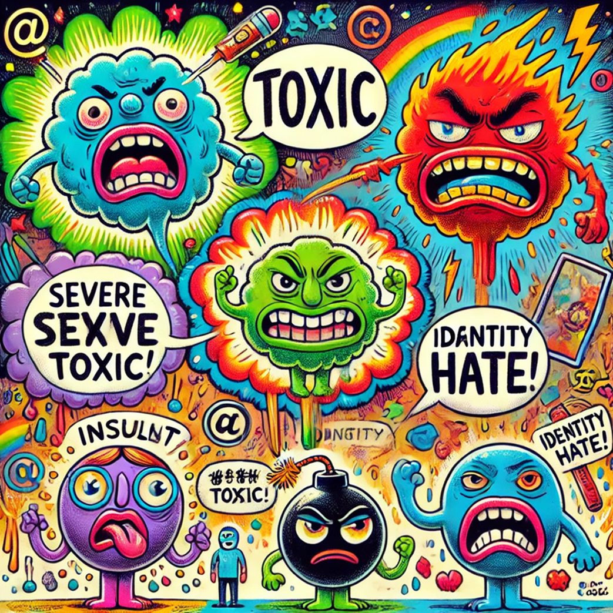
The specific objectives of this program include:
- To utilize deep learning techniques, particularly recurrent neural networks, for toxicity classification in text.
- Evaluating the performance of the trained model using metrics like precision, recall, and accuracy.
- Creating a user interface using Gradio to allow users to interact with the model.
03 / Techniques
NLP preprocessing and a bidirectional LSTM
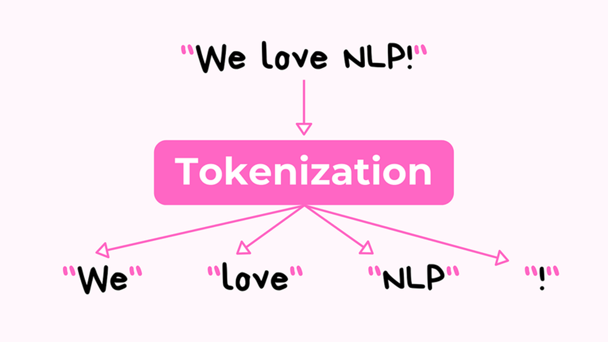
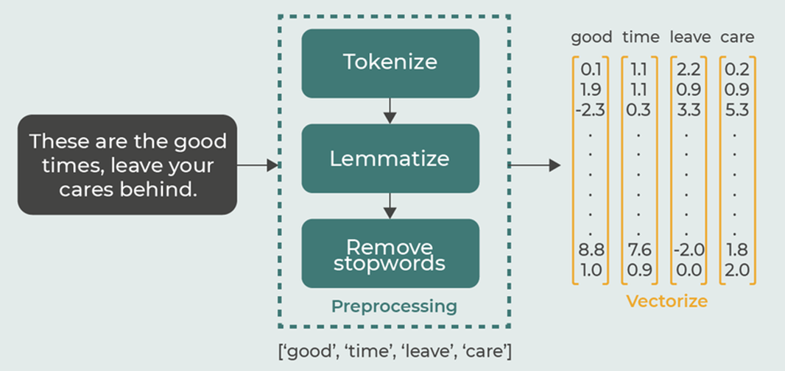
The study employs a combination of Natural Language Processing (NLP) and deep learning techniques to achieve its objective. NLP is utilized for preprocessing the text data, which involves tasks such as tokenization and creating numerical representations of words through text vectorization. This numerical data is then fed into a deep learning model, specifically a Bidirectional Long Short-Term Memory (LSTM) network, for classification.
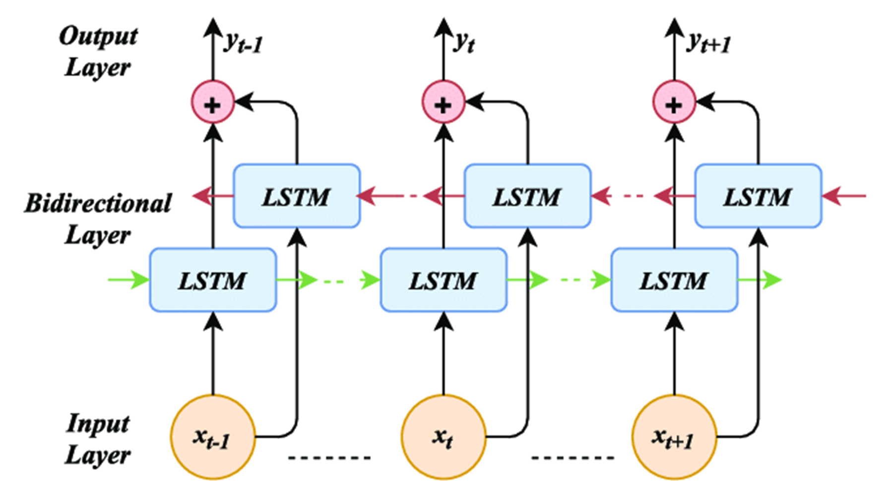
The bidirectional nature of the LSTM allows the model to capture contextual information from both preceding and succeeding words, enhancing its understanding of the text's meaning. Supervised learning is employed to train the model using labeled data, where each comment is associated with a toxicity classification.
Finally, the model's performance is evaluated using metrics like precision, recall, and accuracy to assess its effectiveness in identifying and categorizing toxic language.
04 / Data collection
Jigsaw Toxic Comment Classification Challenge
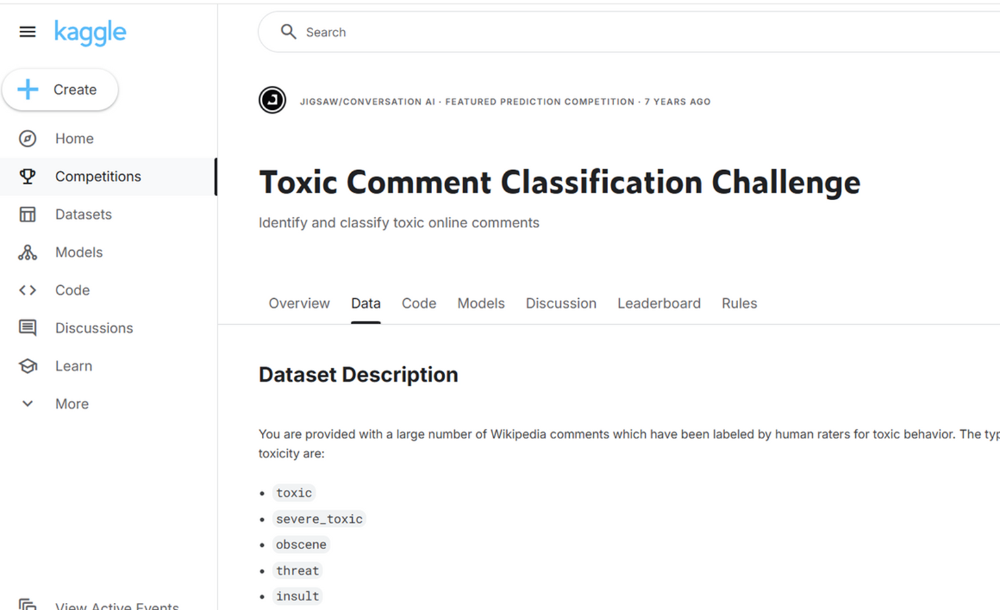
The program uses the "Jigsaw Toxic Comment Classification Challenge" dataset from Kaggle. This dataset contains a large number of comments labeled with the six toxicity categories. The dataset contains approximately 159,000 comments from Wikipedia talk pages that have been labeled by human annotators as toxic or non-toxic.
05 / Finding the optimal model
Sequential bidirectional LSTM
The researchers developed a Bidirectional Long Short-Term Memory (LSTM) architecture, implemented as a sequential model with an embedding layer, a bidirectional LSTM layer, and dense layers.
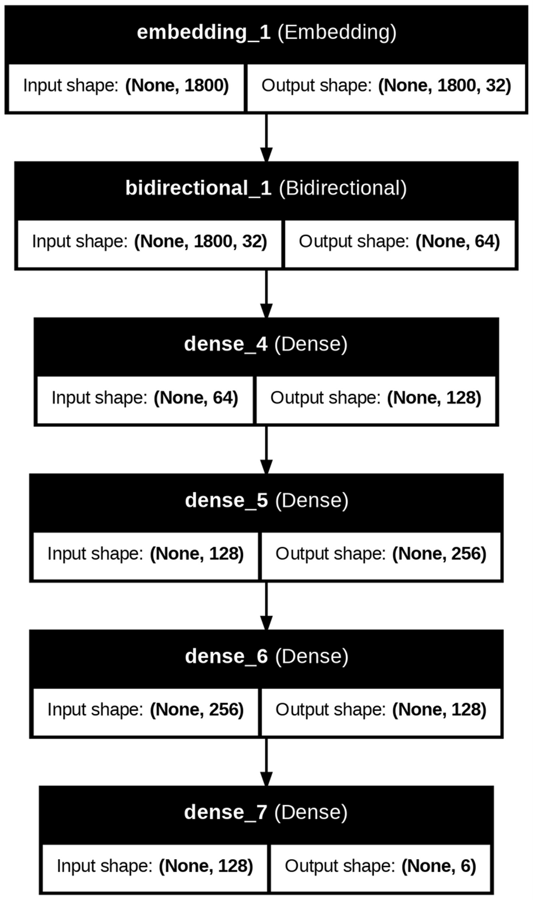
06 / Data preprocessing and loading
Text vectorization and the Jigsaw dataset
- Text data was then preprocessed using TextVectorization for numerical representation and split into training, validation, and test datasets via the tf.data API to facilitate accurate toxicity classification.
- In loading the data, the study utilized the Jigsaw Toxic Comment Classification Challenge dataset for training and evaluation purposes.
07 / Test-train split
70% train, 20% validation, 10% test
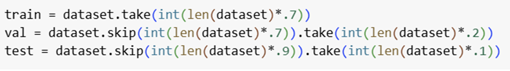
The dataset was split into three subsets to ensure proper training, validation, and testing of the model. Specifically:
- 70% of the dataset was used for training the model.
- 20% of the dataset was allocated for validation to fine-tune the model and prevent overfitting.
- 10% of the dataset was reserved for testing to evaluate the model's performance on unseen data.
08 / Building the model
Seven layers from embeddings to probabilities
The model architecture consists of seven layers: an embedding layer, a bidirectional LSTM layer, three dense layers for feature extraction, and a final dense layer for outputting toxicity probabilities.
Breakdown:
- Embedding layer: Converts words into numerical vectors.
- Bidirectional LSTM layer: Processes the word sequences, capturing context.
- Dense layer 1: Extracts features.
- Dense layer 2: Extracts further features.
- Dense layer 3: Extracts more features.
- Dense layer (output): Produces toxicity probabilities for the six categories.
09 / Training and evaluating the model
Binary cross-entropy with Adam
- The model was trained using the BinaryCrossentropy loss function and the Adam optimizer.
- Its performance was evaluated on a test dataset using precision, recall, and accuracy metrics to assess its effectiveness in classifying toxic comments.
10 / Results
Precision, recall, and accuracy
- Precision: 0.916
- Recall: 0.922
- Categorical Accuracy: 0.479
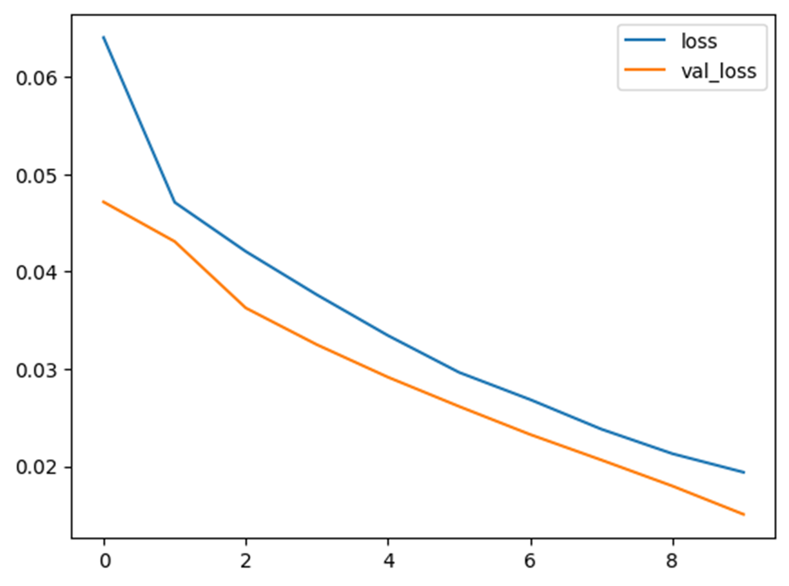
The model performs well on both training and validation data without overfitting.
11 / Sample output
Gradio classification interface
The system uses Gradio to provide a user-friendly interface, allowing users to input text and view the classification results seamlessly.
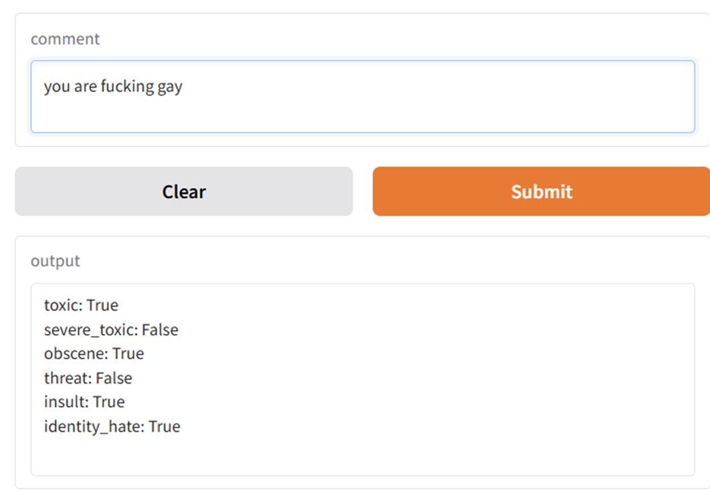
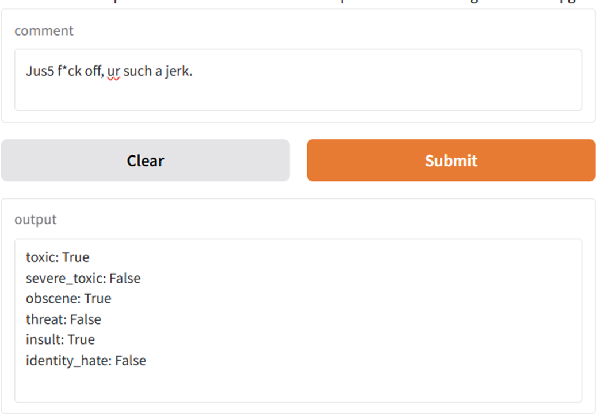
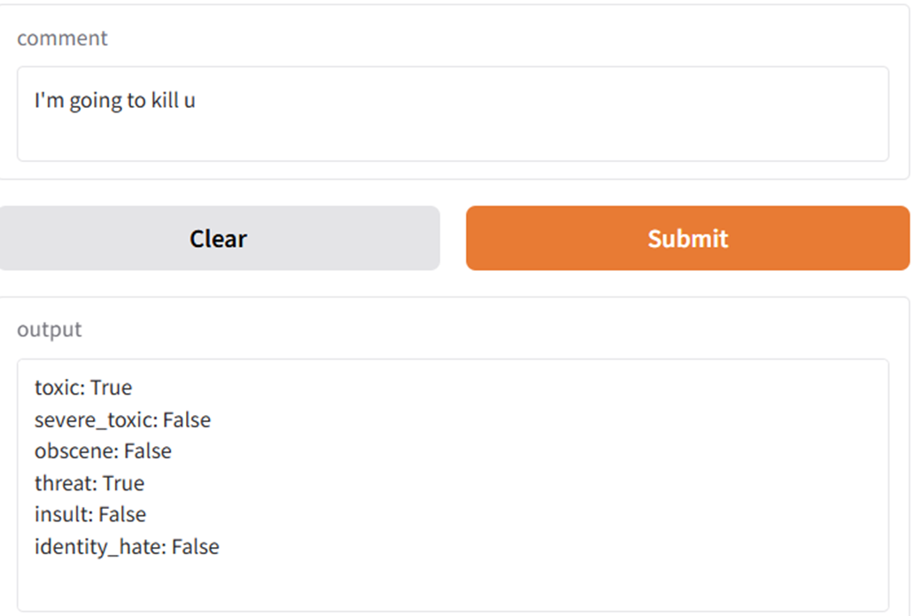
12 / Conclusion
A reliable toxicity classifier
- The gap between training and validation loss is small, suggesting that overfitting is minimal, and the model is well-optimized.
- Overall, the model performs reliably in identifying toxic comments, as indicated by the improved performance metrics (Precision: 0.916, Recall: 0.922, Categorical Accuracy: 0.479).